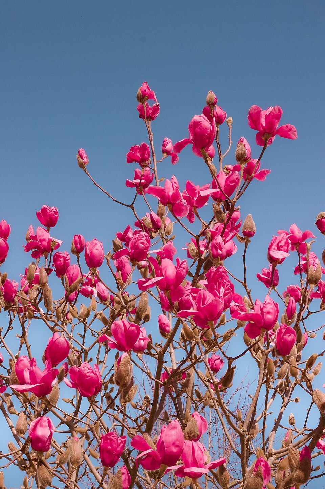
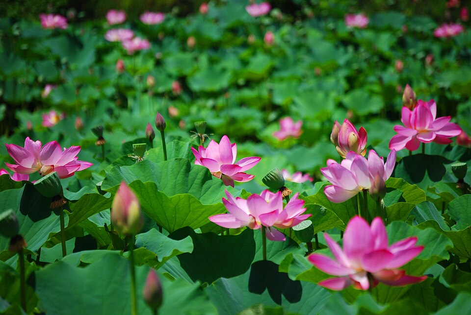
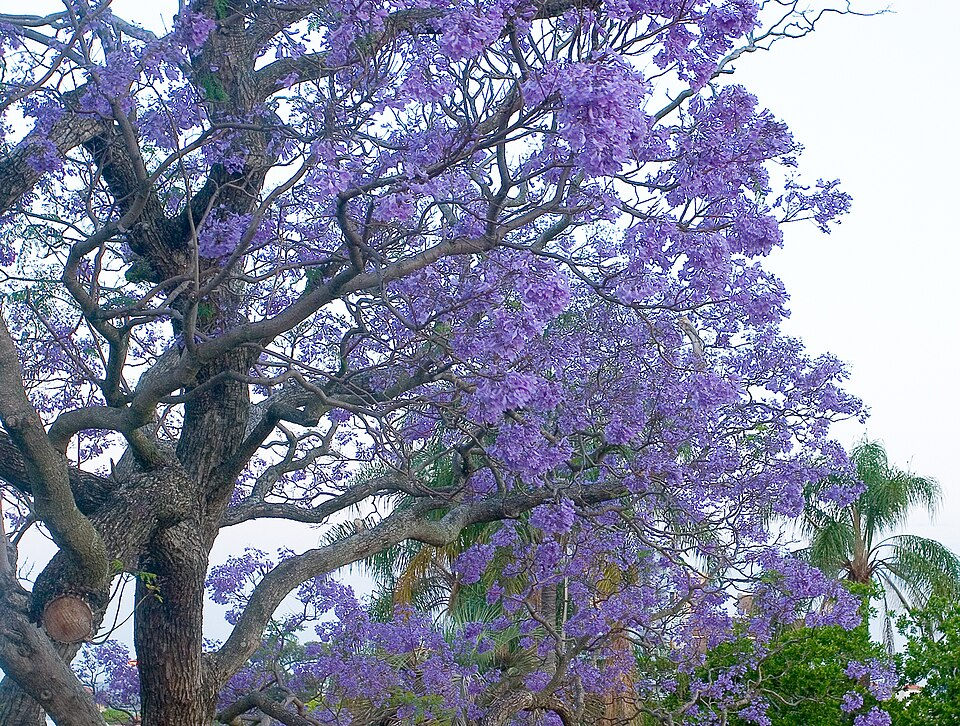
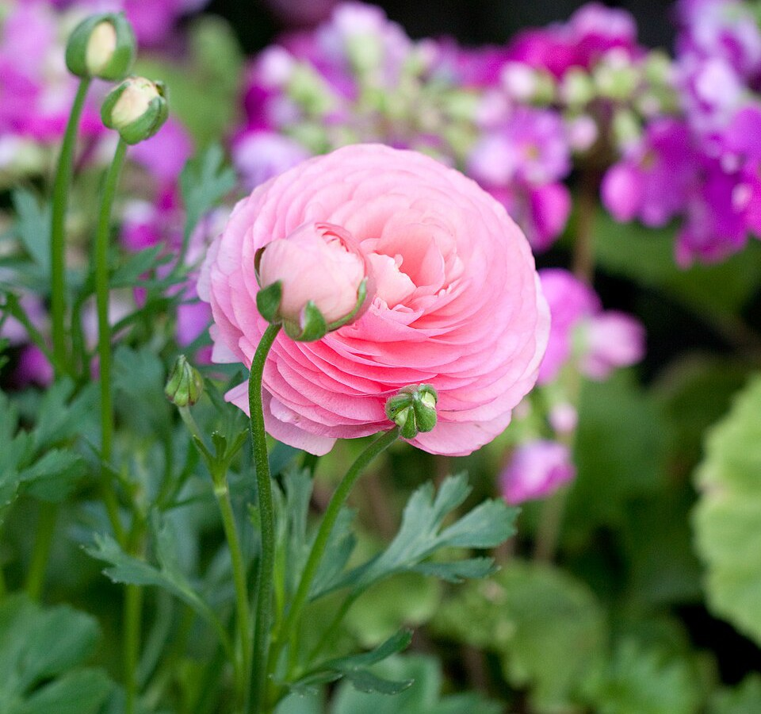
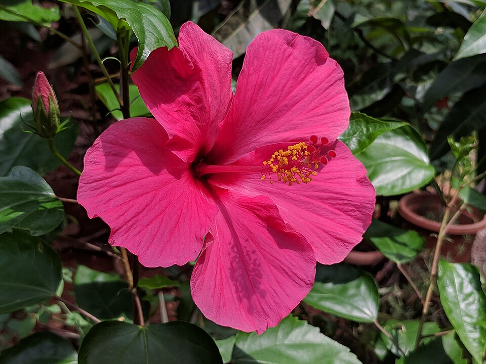
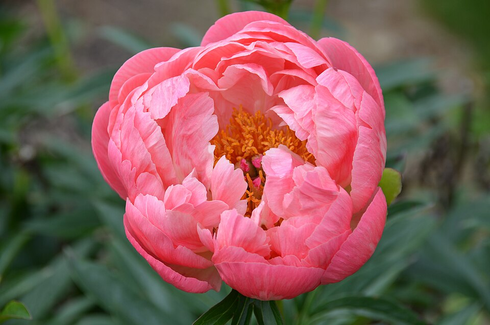
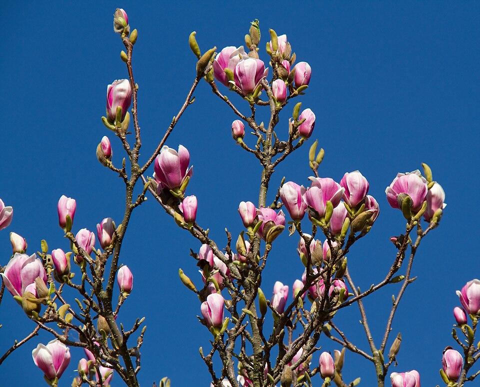
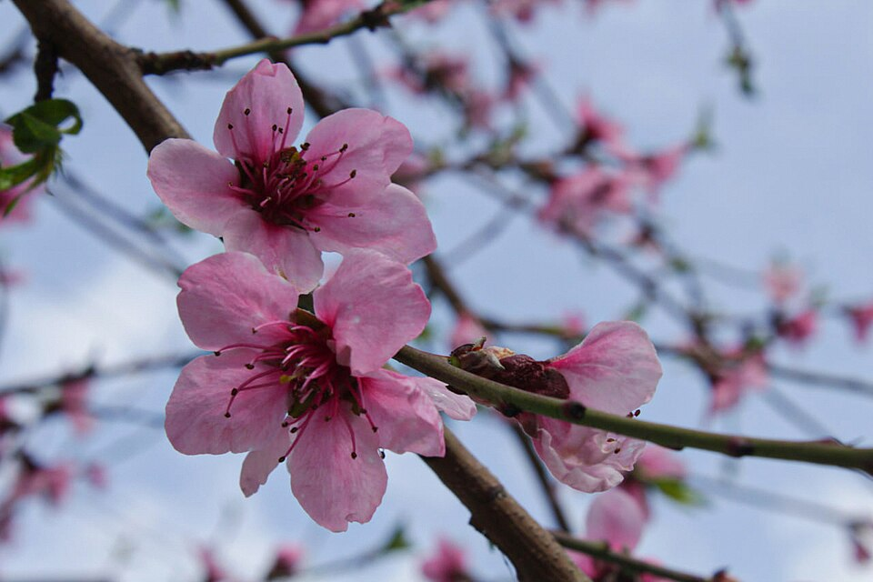

About Me
Hi! I'm Hongyu Yang, a Ph.D. student in Computer Science at Kent State University, advised by Dr. Yuzhi Guo. Before that, I received my M.S. in Data Science in Health from University of California, Los Angeles (UCLA), and my B.S. in Computer Science from Purdue University.
My current research focuses on AI for biomedicine, including gene perturbation prediction and gene relationship prediction on biological pathways. Previously, I worked on AI for health, forecasting continuous glucose monitoring (CGM) with time-series foundation models and multimodal dietary context.
Research Interests
News
- Sep 2026 Evaluating Time-Series Foundation Models and Multimodal Dietary Context for CGM Forecasting is on arXiv.
- Jun 2026 Multimodal CGM Forecasting: Fine-Tuned Foundation Models and Dietary Context Improve Postprandial Prediction was published in Diabetes.
Publications
My Google Scholar profile.
2026
-
Evaluating Time-Series Foundation Models and Multimodal Dietary Context for CGM ForecastingarXiv:2609.11872, 2026 · * Equal contribution
@article{zhang2026evaluating, title = {Evaluating Time-Series Foundation Models and Multimodal Dietary Context for CGM Forecasting}, author = {Zhang, Bowen and Cheng, Hsiu-Wen and Yang, Hongyu and Shen, Evie L. and Vansomphone, Joleen and Li, Yuna and Zhou, Kerry and Qu, Zitian and Zhao, Suning and Deng, Xiangning and Zhou, Hua and Zhou, Jin J.}, journal = {arXiv preprint arXiv:2609.11872}, year = {2026} } -
Multimodal CGM Forecasting: Fine-Tuned Foundation Models and Dietary Context Improve Postprandial PredictionDiabetes 75 (Supplement 1): 1935-P, 2026
@article{zhang2026multimodal, title = {Multimodal CGM Forecasting: Fine-Tuned Foundation Models and Dietary Context Improve Postprandial Prediction}, author = {Zhang, Bowen and Zhou, Kerry and Cheng, Hsiu-Wen and Yang, Hongyu and Zhou, Jin and Zhou, Hua}, journal = {Diabetes}, volume = {75}, number = {Supplement 1}, pages = {1935-P}, year = {2026}, doi = {10.2337/db26-1935-P} }
Curriculum Vitae
Education
-
Ph.D. in Computer Science2026 – presentKent State University
-
M.S. in Data Science in Health2023 – 2025University of California, Los Angeles (UCLA)
-
B.S. in Computer Science2022Purdue University
Research Experience
-
Graduate Research Assistant2026 – PresentKent State UniversityAdvisors: Dr. Yuzhi Guo
-
Research Assistant2025 – 2026University of California, Los Angeles (UCLA)Advisors: Dr. Hua Zhou and Dr. Jin Zhou
Work Experience
-
IT Support StudentJul 2024 – Jun 2025University of California, Los Angeles (UCLA) · Los Angeles, CA
-
AI InternJun 2024 – Sep 2024New York, NY
-
Software Engineer2022 – 2023Santa Clara, CA
Skills
Hobbies
- Hiking
- Archery
- Nature
- Food
Flowers








What to Eat Today? 今天吃什么？
- 香辣鸡脆骨
- 火锅
- 烤鸭
- 水煮鱼
- 鸡蛋糕
- 酸菜鱼
- 烧烤
- 干煸肥肠
- 毛血旺
- 软炸里脊
- 小酥肉
- 油焖大虾
- 糖醋排骨
- 红烧肉
- 东坡肉
- 醉蟹
- 鹅肝
- 皮皮虾
- 串串香
- 烤串
- 锅包肉
- 酱爆肉丁
- 芙蓉鸡片
- 蹄花
- 十三香小龙虾
- 肉夹馍
- 麦辣鸡翅
- 蛋挞
- 香芋派
- 烧鹅
- 烤羊排
- 日本豆腐
- 炸鲜奶
- 爆肚
- 口水鹅肠
- 葱油螺片
- 清蒸鲈鱼
- 砂锅鸡翅排骨
- 吊炉饼
- 豆腐脑
- 双皮奶
- 老厨茄子
Photo credits
- Pink Magnolia: Iateabottle, CC BY 4.0
- Lotus: Peripitus, CC BY-SA 4.0
- Southern Magnolia: Carol VanHook, CC BY-SA 2.0
- Lotus Pond: NPS photo, Public domain
- Jacaranda: Sheba_Also 43,000 photos, CC BY-SA 2.0
- Ranunculus: Yoko Nekonomania, CC BY 2.0
- Hibiscus: Vengolis, CC BY-SA 3.0
- Jacaranda: Martie Swart from Johannesburg, South Africa, CC BY 2.0
- Coral Peony: F. D. Richards from Clinton, MI, CC BY-SA 2.0
- Pink Magnolia: Tony Hisgett from Birmingham, UK, CC BY 2.0
- Peach Blossom: 9th.rose, CC BY-SA 4.0